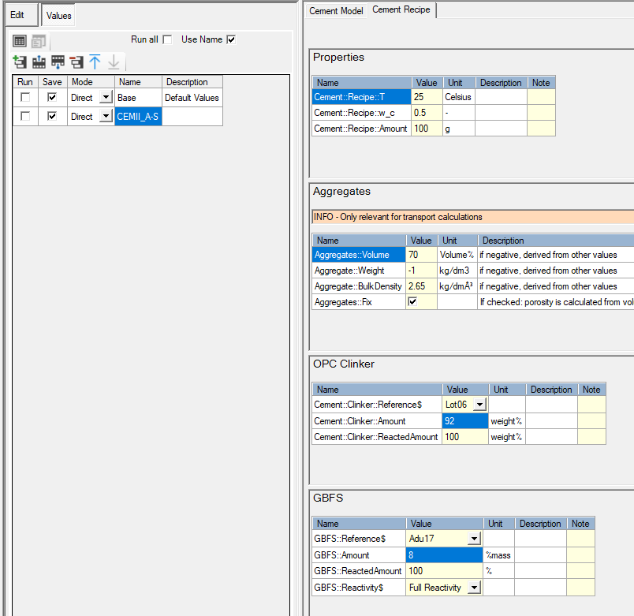

Tutorial - Calculate the cement hydrates assemblages with part of OPC is replaced by GBSF
Tutorial - Calculate the cement hydrates assemblages with part of OPC is replaced by GBSF
Description
Calculate the hydrates assemblage and pore water composition of the hydration of 100 g CEM-I with a water/cement ratio of 0.5 and at a temperature of 25°C where 10% of OPC is replaced by GFBS. The CEM I oxide composition is taken from the Lothenbach and Winnefeld (2006) (their table 1); the GBFS oxide composition from Adu-Amankwah et al. (2017). Calculations are done in the Ca-Si-Al/Fe-S-Mg-C-Na-K system.
You will learn to
Define different cases in one simulation.
Template - Hydrates_00_General
Depends on
Tutorial - Calculate the cement hydrates assemblage and pore water composition
Create the case(s) in the simulation
Open the simulation that was created in Tutorial Calculate the cement hydrates assemblage and pore water composition via the Project Manager or via the drop down list of previously opened simulations.
Go to the Global Variable Tab
Go to Global Variables
Cases are listed in the left panel
In a re-opened simulation, the table contains one case called Base by default. In a newly made simulation, this table is still empty, and cases can be added by the procedure described below.

Ensure that Use Name is checked. The subfolders containing the cases will have the name printed in the column Name.
Click to add a case 
Call the first case “CEMI” and check the box in the column with heading Save
Call the first case “CEMII_A-S” and check the box in the column with heading Save.
The first case uses the default values in the table, i.e. 100% OPC.
Select the second case (just select any cell in the second row)
Go to the Cement Recipe tab
Change following variables:
Cement::Clinker::Amount to 92
GBFS::Amount to 8
Run the problem 
Check output.
END Calculate the cement hydrates assemblages with part of OPC is replaced by GBSF
Created with the Personal Edition of HelpNDoc: Maximize Your Productivity with HelpNDoc's Efficient User Interface